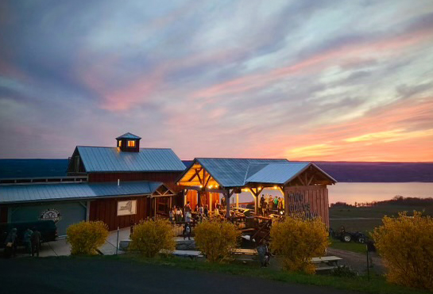

Good beer. Good beef. Good people. — A solar-powered brewpub with epic Seneca Lake views.
Burdett, NY
Open 7 Days
~6 miles from Watkins Glen
75% Solar Powered
Live Music Thu–Sun
Dog & Family Friendly
About
Two Goats Brewing
Tucked into a renovated 19th century barn on the hillside above Seneca Lake, Two Goats Brewing has been one of the Finger Lakes' most beloved neighborhood brewpubs since opening in 2010. It's a small, locally-owned, created-from-scratch kind of place — and you feel that the moment you walk in.
The deck is where you want to be. Sweeping west-facing views of Seneca Lake, colorful goat-head tap handles, great beer in your hand, and live music drifting across the patio Thursday through Sunday. Two Goats keeps it simple and does it right — craft beer brewed in-house, local FLX wine and cider, and one legendary sandwich.
Oh, and they run 75% on solar power — because doing right goes beyond what's in the glass.
In Our Words
Our Story
Two Goats is one of those places that's impossible to explain until you've sat on that deck at golden hour with a pint in your hand and Seneca Lake stretched out in front of you. It just clicks. The beer is excellent, the vibe is completely unpretentious, and the live music gives it an energy that's hard to find anywhere else on the lake.
Get the beef-on-weck. It's the only sandwich they serve, and there's a very good reason for that — it doesn't need competition. House-made rolls, naturally-raised, locally sourced beef, and every bit as good as the view. Two Goats is a Finger Lakes original, and it never gets old.
— South East Seneca
Why Visit
What to Expect
Craft Beer on Draft
Flights, pints, cans, and growlers — all brewed in-house with locally sourced ingredients.
Epic Lake Views
West-facing deck overlooking Seneca Lake — one of the best sunset spots in the entire region.
Live Music Thu–Sun
Original live music on the back deck Thursday through Sunday throughout the season.
Beef-on-Weck
One legendary sandwich. House-made rolls, naturally-raised, locally sourced beef. Served until 30 min before close.
75% Solar Powered
One of the most eco-conscious breweries in the Finger Lakes — doing right beyond the glass.
Dog & Family Friendly
Kids and well-behaved dogs welcome. Friendly, library-voiced pups preferred on the patio.
Craft Beer
What's on Tap
Two Goats brews all their own beer on-site with rotating seasonal styles. Flights and pints available at the bar, plus cans and growlers to go. FLX wine, cider, and soft drinks always on hand too.
Goatmaster KolschCrisp, light, easy-drinking
Dirty Shepard BrownToasted malt with a dark flavor and light body — perfect for cooler evenings on the deck
Redbeard RedSmooth, light, and perfect for those who want a mild ale
Hector LoggerSmooth, light amber lager for those who want a "domestic"
Golden Crush IPAA no-lactose citrusy hazy IPA
Seasonal RotationsCream ale, stout, hefeweizen, fresh-hopped — a rotation of beers with every season
FLX Wine & CiderLocally sourced Finger Lakes wine and cider always available
Cans & Growlers To GoTake Two Goats home — ask at the bar for current to-go options
Tap list rotates — follow @twogoatsbrewing on Instagram for current selections.
The Food
One Sandwich. Done Right.
Two Goats keeps it simple on the food menu — and that's the whole point. They do one thing and they nail it every time.
Beef-on-Weck ★
A Western New York classic done the Two Goats way. House-made kimmelweck rolls, naturally-raised, locally sourced beef, served until 30 minutes before close. A hummus sandwich is also available. That's the menu — and it's all you need.
Gallery
Photos

Photos · Two Goats Brewing, Burdett NY
Plan Your Visit
Tips for Visitors
Live music runs Thursday through Sunday — Fri & Sat 6–9 PM, Sun 4–7 PM.
Beef-on-weck is served until 30 minutes before close — don't wait too long.
Walk-in groups max 8 people. No groups after 5 PM on weekends or holiday weekend Sat/Sun.
Dogs welcome outside — friendly and leashed, equal number of humans to dogs required.
Grab cans or a growler to go — great way to take a taste of the lake home with you.
The driveway off Route 414 is easy to miss — watch for the sign and slow down.
Follow @twogoatsbrewing on Instagram for the music schedule and beer updates.
What's On
Live Music & Events
Fri & Sat · 6–9 PM
Weekend Live Music
Original live music on the back deck every Friday and Saturday evening throughout the season.
Weekly
Sunday · 4–7 PM
Sunday Live Music
Wind down the weekend with live music on Sunday afternoons — one of the best ways to close out a Finger Lakes weekend.
Weekly
Year-Round
Seasonal Beer Releases
New and rotating brews throughout the year — follow on Instagram to catch limited releases fresh.
Seasonal
Year-Round
Festivals & Community Events
Two Goats participates in regional events and hosts special gatherings throughout the year — check their website for what's coming up.